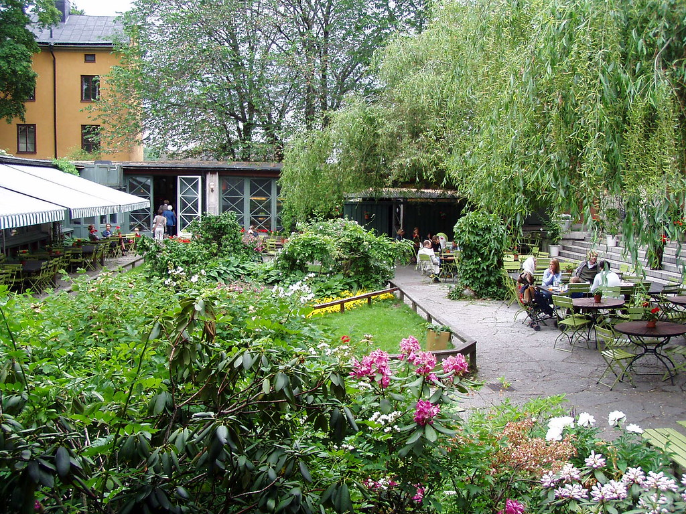

In many Swedish offices, around ten in the morning, something happens that in other countries might read as a sign of low productivity but in Sweden is actually the opposite: pretty much the entire team drops what it's doing, gathers in the office kitchen or common room, and spends fifteen to thirty minutes drinking coffee, eating something sweet — typically a kanelbulle, the classic Swedish cinnamon roll — and chatting about anything that has nothing to do with work. This break has its own name, fika, and in Sweden it's considered a social institution almost as important as any formal item on the work agenda.
Fika isn't simply "having a coffee" — that translation falls well short of what it actually represents in Swedish culture. It works as both a noun ("let's have a fika") and a verb ("shall we fika tomorrow?"), and describes a structured, almost ritual social moment where informal conversation, a temporary disconnect from work, and genuine human connection with colleagues, friends, or family are deliberately prioritized over immediate productive efficiency. Consistently skipping fika in a Swedish workplace, with no clear reason, can even be read as a sign of social distance or a lack of integration with the team.
The custom's roots trace back to the 19th century, when coffee — initially a luxury import reserved for Sweden's upper classes — gradually became popular among the wider population, coinciding with a period of growing industrialization in the country. Over time, drinking coffee stopped being a simple act of consumption and turned into a deeply rooted social custom, further reinforced by broader Swedish cultural values around work-life balance and a management philosophy that generally distrusts the idea that nonstop, uninterrupted work automatically equals higher productivity.
The Swedish word "fika" works as both noun and verb: you can have a fika, or simply "fika" with someone.
That last point is especially relevant for understanding why fika survived — and even strengthened — inside highly competitive, technologically advanced modern Swedish workplaces. Numerous Swedish companies, including major international corporations headquartered in the country, actively defend fika as a legitimate management tool, not just a social nicety: they argue these regular breaks improve informal communication across departments, reduce accumulated stress during the workday, strengthen team cohesion, and, somewhat paradoxically, end up boosting overall productivity by preventing the burnout tied to uninterrupted work stretches.
Fika also reflects, more broadly, a Swedish cultural principle known as lagom, a word that translates roughly as "not too much, not too little, just the right amount," which runs through much of Scandinavian life philosophy in general: neither working nonstop to exhaustion, nor resting excessively without producing results, but finding a balanced, sustainable rhythm that keeps both personal wellbeing and professional performance intact over the long run. Fika, in that sense, works almost like a small, everyday, practical expression of that broader ideal of balance.
Beyond the workplace, fika also holds a central place in Swedish social life outside the office: meeting friends to "fika" is one of the most common ways of socializing in the country, whether at home, at one of the countless cafés dotting Swedish cities, or even outdoors during the warmer months. There are specific traditions tied to fika, like serving seven different kinds of cookies or pastries on special occasions — an informal custom known as "sju sorters kakor," literally "seven kinds of cookies" — reflecting just how social, even festive, this seemingly simple break can become.
Fika even has its own unofficial national holiday: October 4th is celebrated across Sweden as Kanelbullens dag, "Cinnamon Bun Day," created in 1999 by a bakers' trade association to promote the classic fika pastry. What started as a marketing campaign has become a genuine cultural fixture, with cafés, offices, and home bakers across the country marking the day with an extra round of cinnamon buns — proof of how easily a commercial idea can take root when it slots neatly into an already-beloved ritual.
Fika is often mentioned in the same breath as the Danish concept of hygge, and the two get lumped together internationally as generic "Scandinavian coziness," but they aren't quite the same thing. Hygge leans toward a broader feeling — candlelight, blankets, a sense of warm contentment that can happen alone or with others, at any time. Fika is more specific and social: a scheduled pause, almost always shared, built around coffee and a small sweet, with its own unwritten rules about when and how it happens during the working day.

In the end, what Swedish fika reveals is a radically different way of thinking about work time than the one dominating so many modern work cultures obsessed with constant productivity and uninterrupted efficiency. Sweden, one of the world's most competitive and innovative countries by numerous international economic rankings, decided that deliberately stopping several times a week to share coffee and unscripted conversation with colleagues doesn't take away from work — it complements it, and, deep down, maybe it's what makes doing that work sustainable in the long run.